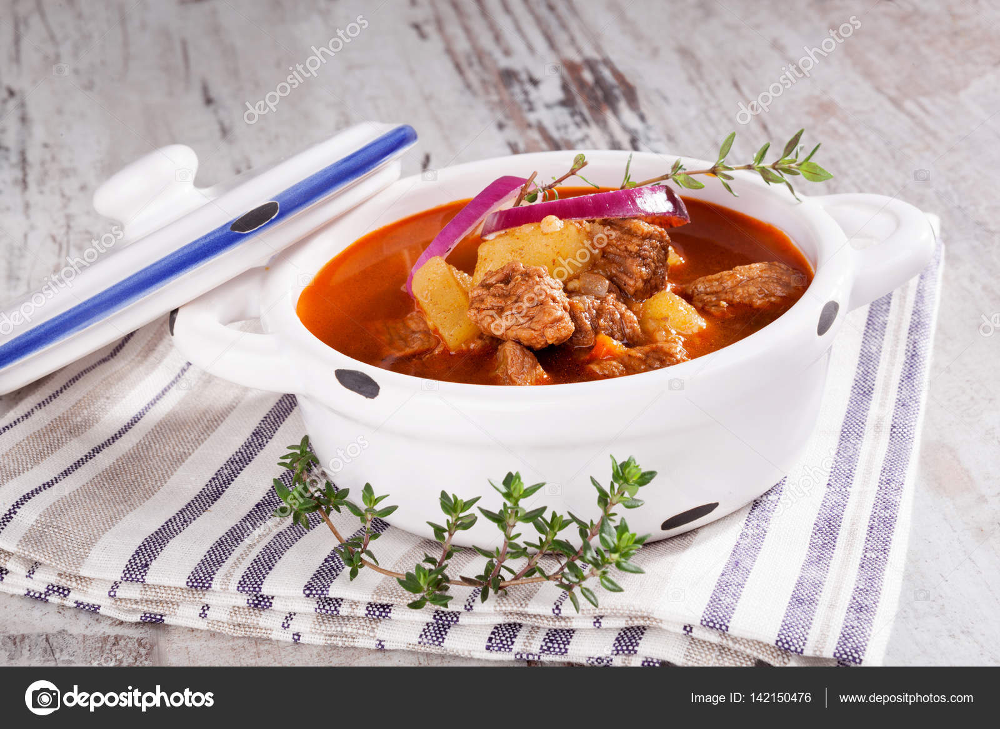

Ingredienser
- 100 g bacon i tern
- 500 g oksebov
- 1 rød peberfrugt
- 2 løg
- 3 fed hvidløg
- 150 g knoldselleri
- 150 g gulerødder
- 200 g kartofler
- salt og friskkværnet peber
- 1 tsk røget paprika
- 1 tsk stødt spidskommen
- 2 spsk sød paprika
- 2 laurbærblade
- 1 dåse hakkede eller purerede tomater efter præference
- 70 g tomatpuré
- 7 1/2 dl oksebouillon
- 1 dl piskefløde
Tilbehør
- frisk persille
- cremefraiche 18 %
- et godt stykke brød
Sådan gør du
- Skær bacon i tern, og steg dem sprøde i en stor gryde. Lad dem afdryppe på fedtsugende papir.
- Skær oksebov i 2 cm x 2 cm store tern. Brun oksekødet i baconfedtet i gryden.
- Pil og hak løg, og pil og pres hvidløg. Lad løg og hvidløg svitse med i gryden.
- Skræl rodfrugterne, skær dem i 1 cm x 1cm tern, og tilsæt dem sammen med salt, peber, begge typer paprika og spidskommen. Lad det svitse i 5 minutter.
- Hæld hakkede/purérede tomater, tomatpuré, bouillon og laurbærblade i gryden, og rør rundt.
- Læg låg på, og lad suppen simre i 2 timer.
- Rens peberfrugt, skær den i strimler, og tilsæt sammen med fløde.
- Lad suppen simre i yderligere 30 minutter.
- Tilsæt bacon, og smag til med salt og peber.
Tips
- Du kan tilføje halvdelen af kartoflerne med resten af rodfrugterne, og tilføje den anden halvdel i step 7.
- Man kan sagtens komme endnu flere rodfrugter i.
- God til fryseren :-)